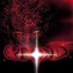

|
|
||
Cydonia (2000) |
|

http://dankeying.supereva.it |
1. The King 4:48 |
8.5/10 |
|
Cydonia es el primer disco de la banda italiana del mismo nombre, fundada por el cantante Dan Keying en 1999. Que Olaf Thorsen, líder de la conocida banda italiana Labyrinth, le ofreciera ser el cantante de esta banda, algo que Dan terminó por rechazar debido a que no era el estilo musical que le interesaba, y que el mismo Thorsen se haya encargado de la grabación de este Cydonia, dice mucho en favor de esta banda. Este disco, conceptual, que trata sobre una civilización que se ve obligada a abandonar su hogar, el planeta Marte, ofrece un power metal progresivo, más en la línea quizás de bandas como Stratovarius, que en el de otras bandas italianas actuales, y desde luego más cerca del estilo de Rhapsody o de Secret Sphere que del de Labyrinth, a pesar de la aportación de Olaf Thorsen. La portentosa voz de Dan Keying es otro de los puntos a destacar en este fantástico debut, que promete grandes cosas para el futuro (siempre que cambien al que les ha hecho las portadas del disco, que son de lo más feo que he visto últimamente... ;-) Tras unas frases de introducción, "The King" senta las bases de lo que es este disco: los teclados tienen gran protagonismo, aunque la guitarra no desaparece como ocurre en otras bandas y el doble bombo marca el vertiginoso ritmo. "Legend in Time" tiene un sonido más progresivo, más cambios de ritmo, en los que una aplicación inteligente del doble bombo tiene mucho que ver y un tono más oscuro. Algunos gritos notablemente altos demuestran lo que puede cantar Dan Keying. El estribillo es melodioso y pegadizo. Un solo de guitarra notablemente original y potente completa esta gran canción. "Land of Life" se apoya en algunos riffs típicos de power metal y, de nuevo, en un ritmo notablemente rápido, aunque con muchos cambios de ritmo que mantienen el interés y la atención y construyen otra gran canción. "Great Soul of Steel" retoma el sonido más progresivo y oscuro. El estribillo de esta canción es uno de los mejores momentos del album. El quinto corte, "Last Prayers" es una canción más lenta, quizás no una balada, acompañada por los teclados y las guitarras sin distorsión en su comienzo, pero que enseguida acelera su ritmo y aumenta su fuerza. El estribillo también es fantástico y en él Dan Keying demuestra de nuevo el gran rango de su voz. Cambios de ritmo y partes instrumentales y cantadas se alternan para que no se haga pesada una canción que dura más de siete minutos. "Confused Future" incrementa de nuevo el ritmo desde el principio. De tono más oscuro y riffs más contundentes es quizás la canción más potente del disco. Los solos de guitarra y teclado son afilados y veloces. "Masters of Stars" comienza con los teclados, majestuosa y futurista. Es una canción melodiosa y soportada principalmente por los teclados. "Slave to Dream" trae de nuevo un tono progresivo y un ritmo moderado, aderezados con buenos solos de guitarra. Finalmente "Eternal Tears" es una balada que no destaca especialmente aunque tampoco desmerece al resto de este fantástico álbum. |
||
Rubén Béjar |
||